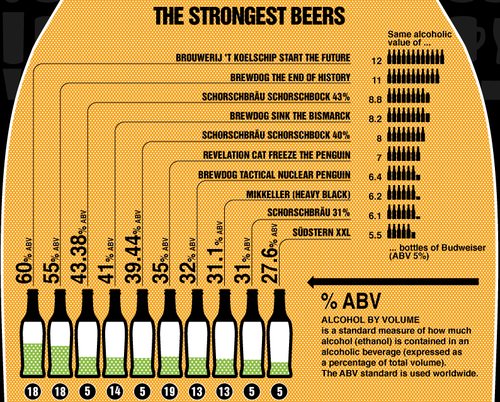

Sat, 18 Sep 2010 00:59:00 · beer · drinks · infographic
Infographic: World's Strangest and Strongest Beers
If you love beer, you might wanna check out whether your fave drink is on the list ~ and make sure yours isn’t in the girlie group [no pun intended] *_^
~ gulp it all here…
